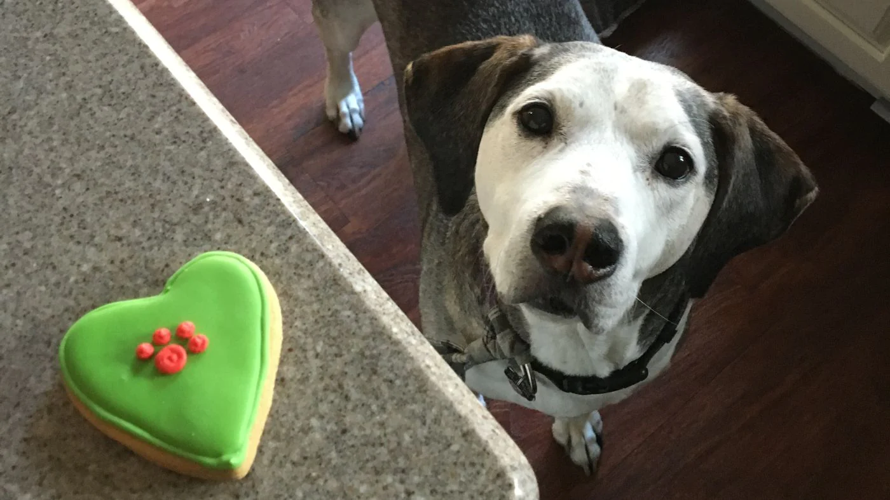

Dogs
Fostering Dogs
Our 'Home from Home' foster programme seeks temporary homes for our most vulnerable dogs. Sometimes we encounter dogs, who might not be suitable to live in a kennel environment, and would benefit greatly from the foster programme. These may include older dogs, injured or unwell dogs, puppies or dogs who may be finding kennel life a little overwhelming. Fostering a dog not only gives invaluable experience in caring for a dog but it plays a fundamental role in helping the most vulnerable dogs get back on their paws and have a better chance of finding their forever home, which is an incredibly rewarding experience for any dog lover. Learn more